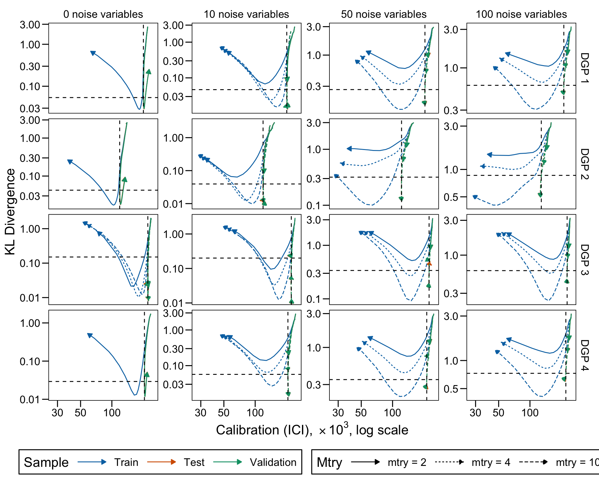

This chapter investigates the distribution of scores returned by random forests. We consider here a fixed size for the forests and make the complexity of the trees of the forest vary (by varying the minimal number of observations per termina leaf). We also vary the number of variables considered to perform a split.
library(tidyverse)
── Attaching core tidyverse packages ──────────────────────── tidyverse 2.0.0 ──
✔ dplyr 1.1.4 ✔ readr 2.1.5
✔ forcats 1.0.0 ✔ stringr 1.5.1
✔ ggplot2 3.5.1 ✔ tibble 3.2.1
✔ lubridate 1.9.3 ✔ tidyr 1.3.1
✔ purrr 1.0.2
── Conflicts ────────────────────────────────────────── tidyverse_conflicts() ──
✖ dplyr::filter() masks stats::filter()
✖ dplyr::lag() masks stats::lag()
ℹ Use the conflicted package (<http://conflicted.r-lib.org/>) to force all conflicts to become errors
library(ggh4x)
Attaching package: 'ggh4x'
The following object is masked from 'package:ggplot2':
guide_axis_logticks
library(rpart)library(locfit)
locfit 1.5-9.9 2024-03-01
Attaching package: 'locfit'
The following object is masked from 'package:purrr':
none
library(philentropy)# Colours for train/validation/testcolour_samples <-c("Train"="#0072B2","Validation"="#009E73","Test"="#D55E00")
definition of the theme_paper() function (for ggplot2 graphs)
We generate data using the first 12 scenarios from Ojeda et al. (2023) and an additional set of 4 scenarios in which the true probability does not depend on the predictors in a linear way (see Chapter 4).
When we simulate a dataset, we draw the following number of observations:
nb_obs <-10000
Definition of the 16 scenarios
# Coefficients betacoefficients <-list(# First category (baseline, 2 covariates)c(0.5, 1), # scenario 1, 0 noise variablec(0.5, 1), # scenario 2, 10 noise variablesc(0.5, 1), # scenario 3, 50 noise variablesc(0.5, 1), # scenario 4, 100 noise variables# Second category (same as baseline, with lower number of 1s)c(0.5, 1), # scenario 5, 0 noise variablec(0.5, 1), # scenario 6, 10 noise variablesc(0.5, 1), # scenario 7, 50 noise variablesc(0.5, 1), # scenario 8, 100 noise variables# Third category (same as baseline but with 5 num. and 5 categ. covariates)c(0.1, 0.2, 0.3, 0.4, 0.5, 0.01, 0.02, 0.03, 0.04, 0.05),c(0.1, 0.2, 0.3, 0.4, 0.5, 0.01, 0.02, 0.03, 0.04, 0.05),c(0.1, 0.2, 0.3, 0.4, 0.5, 0.01, 0.02, 0.03, 0.04, 0.05),c(0.1, 0.2, 0.3, 0.4, 0.5, 0.01, 0.02, 0.03, 0.04, 0.05),# Fourth category (nonlinear predictor, 3 covariates)c(0.5, 1, .3), # scenario 5, 0 noise variablec(0.5, 1, .3), # scenario 6, 10 noise variablesc(0.5, 1, .3), # scenario 7, 50 noise variablesc(0.5, 1, .3) # scenario 8, 100 noise variables)# Mean parameter for the normal distribution to draw from to draw num covariatesmean_num <-list(# First category (baseline, 2 covariates)rep(0, 2), # scenario 1, 0 noise variablerep(0, 2), # scenario 2, 10 noise variablesrep(0, 2), # scenario 3, 50 noise variablesrep(0, 2), # scenario 4, 100 noise variables# Second category (same as baseline, with lower number of 1s)rep(0, 2), # scenario 5, 0 noise variablerep(0, 2), # scenario 6, 10 noise variablesrep(0, 2), # scenario 7, 50 noise variablesrep(0, 2), # scenario 8, 100 noise variables# Third category (same as baseline but with 5 num. and 5 categ. covariates)rep(0, 5),rep(0, 5),rep(0, 5),rep(0, 5),# Fourth category (nonlinear predictor, 3 covariates)rep(0, 3),rep(0, 3),rep(0, 3),rep(0, 3))# Sd parameter for the normal distribution to draw from to draw num covariatessd_num <-list(# First category (baseline, 2 covariates)rep(1, 2), # scenario 1, 0 noise variablerep(1, 2), # scenario 2, 10 noise variablesrep(1, 2), # scenario 3, 50 noise variablesrep(1, 2), # scenario 4, 100 noise variables# Second category (same as baseline, with lower number of 1s)rep(1, 2), # scenario 5, 0 noise variablerep(1, 2), # scenario 6, 10 noise variablesrep(1, 2), # scenario 7, 50 noise variablesrep(1, 2), # scenario 8, 100 noise variables# Third category (same as baseline but with 5 num. and 5 categ. covariates)rep(1, 5),rep(1, 5),rep(1, 5),rep(1, 5),# Fourth category (nonlinear predictor, 3 covariates)rep(1, 3),rep(1, 3),rep(1, 3),rep(1, 3))params_df <-tibble(scenario =1:16,coefficients = coefficients,n_num =c(rep(2, 8), rep(5, 4), rep(3, 4)),add_categ =c(rep(FALSE, 8), rep(TRUE, 4), rep(FALSE, 4)),n_noise =rep(c(0, 10, 50, 100), 4),mean_num = mean_num,sd_num = sd_num,size_train =rep(nb_obs, 16),size_valid =rep(nb_obs, 16),size_test =rep(nb_obs, 16),transform_probs =c(rep(FALSE, 4), rep(TRUE, 4), rep(FALSE, 4), rep(FALSE, 4)),linear_predictor =c(rep(TRUE, 12), rep(FALSE, 4)),seed =202105)rm(coefficients, mean_num, sd_num)
6.2 Metrics
We load the functions from Chapter 3 to compute performance, calibration and divergence metrics.
source("functions/metrics.R")
6.3 Simulations Setup
We train different forests using the {ranger} package.
library(ranger)
For each scenario, we train regression forests. Each forest is made of 250 trees (smaller forests are considered in Chapter 7). We consider here the following hyperparameters:
mtry: Number of variables to possibly split at in each node: 2, 4 or 10.
min_node_size: Minimal node size to split at. Varying values between 2 and 10^{4}.
The desired number of replications for each scenario needs to be set:
repns_vector <-1:100
The different configurations are reported in Table 7.1.
Table 6.1: Grid Search Values
We define a function, simul_forest() to train a random forest on a dataset for a type of forest, with given hyperparameters (given to the function through the param argument).
Function simul_forest()
#' Train a random forest and compute performance, calibration, and dispersion #' metrics#' #' @param params tibble with hyperparameters for the simulation#' @param ind index of the grid (numerical ID)#' @param simu_data simulated data obtained with `simulate_data_wrapper()`#' for probability treessimul_forest <-function(params, ind, simu_data) { tb_train <- simu_data$data$train |>rename(d = y) tb_valid <- simu_data$data$valid |>rename(d = y) tb_test <- simu_data$data$test |>rename(d = y) true_prob <-list(train = simu_data$data$probs_train,valid = simu_data$data$probs_valid,test = simu_data$data$probs_test )## Estimation---- fit_rf <-ranger( d ~ .,data = tb_train,min.bucket = params$min_node_size,mtry = params$mtry,num.trees = params$num_trees )# Average number of leaves per trees in the forest nb_leaves <-map_dbl(fit_rf$forest$child.nodeIDs, ~sum(pluck(.x, 1) ==0)) |>mean()## Raw Scores----# Predicted scores scores_train <-predict(fit_rf, data = tb_train, type ="response")$predictions scores_valid <-predict(fit_rf, data = tb_valid, type ="response")$predictions scores_test <-predict(fit_rf, data = tb_test, type ="response")$predictions## Histogram of scores---- breaks <-seq(0, 1, by = .05) scores_train_hist <-hist(scores_train, breaks = breaks, plot =FALSE) scores_valid_hist <-hist(scores_valid, breaks = breaks, plot =FALSE) scores_test_hist <-hist(scores_test, breaks = breaks, plot =FALSE) scores_hist <-list(train = scores_train_hist,valid = scores_valid_hist,test = scores_test_hist )## Estimation of P(q1 < score < q2)---- proq_scores_train <-map(c(.1, .2, .3, .4),~prop_btw_quantiles(s = scores_train, q1 = .x) ) |>list_rbind() |>mutate(sample ="train") proq_scores_valid <-map(c(.1, .2, .3, .4),~prop_btw_quantiles(s = scores_valid, q1 = .x) ) |>list_rbind() |>mutate(sample ="valid") proq_scores_test <-map(c(.1, .2, .3, .4),~prop_btw_quantiles(s = scores_test, q1 = .x) ) |>list_rbind() |>mutate(sample ="test")## Dispersion Metrics---- disp_train <-dispersion_metrics(true_probas = true_prob$train, scores = scores_train ) |>mutate(sample ="train") disp_valid <-dispersion_metrics(true_probas = true_prob$valid, scores = scores_valid ) |>mutate(sample ="valid") disp_test <-dispersion_metrics(true_probas = true_prob$test, scores = scores_test ) |>mutate(sample ="test")# Performance and Calibration Metrics# We add very small noise to predicted scores# otherwise the local regression may crash scores_train_noise <- scores_train +runif(n =length(scores_train), min =0, max =0.01) scores_train_noise[scores_train_noise >1] <-1 metrics_train <-compute_metrics(obs = tb_train$d, scores = scores_train_noise, true_probas = true_prob$train ) |>mutate(sample ="train") scores_valid_noise <- scores_valid +runif(n =length(scores_valid), min =0, max =0.01) scores_valid_noise[scores_valid_noise >1] <-1 metrics_valid <-compute_metrics(obs = tb_valid$d, scores = scores_valid_noise, true_probas = true_prob$valid ) |>mutate(sample ="valid") scores_test_noise <- scores_test +runif(n =length(scores_test), min =0, max =0.01) scores_test_noise[scores_test_noise >1] <-1 metrics_test <-compute_metrics(obs = tb_test$d, scores = scores_test_noise, true_probas = true_prob$test ) |>mutate(sample ="test") tb_metrics <- metrics_train |>bind_rows(metrics_valid) |>bind_rows(metrics_test) |>mutate(scenario = simu_data$scenario,ind = ind,repn = simu_data$repn,min_bucket = params$min_node_size,nb_leaves = nb_leaves,prop_leaves = nb_leaves /nrow(tb_train) ) tb_prop_scores <- proq_scores_train |>bind_rows(proq_scores_valid) |>bind_rows(proq_scores_test) |>mutate(scenario = simu_data$scenario,ind = ind,repn = simu_data$repn,min_bucket = params$min_node_size,nb_leaves = nb_leaves,prop_leaves = nb_leaves /nrow(tb_train) ) tb_disp_metrics <- disp_train |>bind_rows(disp_test) |>bind_rows(disp_valid) |>mutate(scenario = simu_data$scenario,ind = ind,repn = simu_data$repn,min_bucket = params$min_node_size,nb_leaves = nb_leaves,prop_leaves = nb_leaves /nrow(tb_train) )list(scenario = simu_data$scenario, # data scenarioind = ind, # index for gridrepn = simu_data$repn, # data replication IDmin_bucket = params$min_node_size, # min number of obs in terminal leaf nodemetrics = tb_metrics, # table with performance/calib metricsdisp_metrics = tb_disp_metrics, # table with divergence metricstb_prop_scores = tb_prop_scores, # table with P(q1 < score < q2)scores_hist = scores_hist, # histogram of scoresnb_leaves = nb_leaves # number of terminal leaves )}
We define a wrapper function, simulate_rf_scenario() which performs a single replication of the simulations going over the different values of the grid search, for a given scenario.
Function simulate_rf_scenario()
#' Simulations for a scenario (single replication)#' #' @returns list with the following elements:#' - `metrics_all`: computed metrics for each set of hyperparameters. #' Each row gives the values for unique keys #' (sample, min_bucket)#' - `prop_scores_simul` P(q1 < s(x) < q2) for various values of q1 and q2#' Each row gives the values for unique keys #' (sample, min_bucket, q1, q2)#' q1, q2, min_bucket, type, sample)#' - `metrics`: computed metrics for trees of interest #' (smallest, largest, largest AUC, lowest MSE, lowest KL div.).#' Each row gives the values for unique keys #' (sample, type of tree of interest)simulate_rf_scenario <-function(scenario, params_df, repn) {# Generate Data simu_data <-simulate_data_wrapper(scenario = scenario,params_df = params_df,repn = repn ) res_simul <-vector(mode ="list", length =nrow(grid))# cli::cli_progress_bar("Iteration grid", total = nrow(grid), type = "tasks")for (j in1:nrow(grid)) { curent_params <- grid |>slice(!!j) n_var <- simu_data$params_df$n_num + simu_data$params_df$add_categ *5+ simu_data$params_df$n_noiseif (curent_params$mtry > n_var) {# cli::cli_progress_update()next() } res_simul[[j]] <-simul_forest(params = curent_params,ind = curent_params$ind,simu_data = simu_data )# cli::cli_progress_update() } metrics_simul <-map(res_simul, "metrics") |>list_rbind() disp_metrics_simul <-map(res_simul, "disp_metrics") |>list_rbind() metrics <-suppressMessages(left_join(metrics_simul, disp_metrics_simul) ) scores_hist <-map(res_simul, "scores_hist") prop_scores_simul <-map(res_simul, "tb_prop_scores") |>list_rbind()# Metrics for different trees in those estimated# - Smallest number of leaves# - Largest number of leaves# - Max AUC# - Min MSE# - Min KL# Identify the smallest tree smallest <- metrics |>filter(sample =="test") |>arrange(nb_leaves) |>slice_head(n =1) |>select(ind) |>mutate(result_type ="smallest")# Identify the largest tree largest <- metrics |>filter(sample =="test") |>arrange(desc(nb_leaves)) |>slice_head(n =1) |>select(ind) |>mutate(result_type ="largest")# Identify tree with highest AUC on test set highest_auc <- metrics |>filter(sample =="test") |>arrange(desc(AUC)) |>slice_head(n =1) |>select(ind) |>mutate(result_type ="largest_auc")# Identify tree with lowest MSE lowest_mse <- metrics |>filter(sample =="test") |>arrange(mse) |>slice_head(n =1) |>select(ind) |>mutate(result_type ="lowest_mse")# Identify tree with lowest KL lowest_kl <- metrics |>filter(sample =="test") |>arrange(KL_20_true_probas) |>slice_head(n =1) |>select(ind) |>mutate(result_type ="lowest_kl") trees_of_interest <- smallest |>bind_rows(largest) |>bind_rows(highest_auc) |>bind_rows(lowest_mse) |>bind_rows(lowest_kl) trees_of_interest_metrics <- trees_of_interest |>left_join( metrics, by =c("ind"),relationship ="many-to-many"# (train, test) ) trees_of_interest_prop_scores_simul <- trees_of_interest |>left_join( prop_scores_simul, by =c("ind"),relationship ="many-to-many"# (train, test) )list(metrics_all = metrics,metrics = trees_of_interest_metrics,scores_hist = scores_hist,prop_scores_simul = trees_of_interest_prop_scores_simul )}
6.4 Simulations
We loop over the scenarios and run the 100 replications in parallel.
The resul_rf object is of length 16: each element contains the simulations for a scenario. For each scenario, the elements are a list of length max(repns_vector), i.e., the number of replications. Each replication gives, in a list, the following elements:
metrics_all: the metrics (AUC, Calibration, KL Divergence, etc.) for each model from the grid search
scores_hist: the counts on bins defined on estimated scores (on train, validation, and test sets)
prop_scores_simul: the estimations of \(\mathbb{P}(q_1 < \hat{\mathbf{x}}< q_2)\) for various values of q_1 and q_2.
6.5 Results
We can now extract some information from the results.
6.5.1 Tables
We can merge the metrics tables computed for each scenario and replications for these scenarios into a single tibble.
And then, let us also get the trees of interest for each replication (smallest, largest, the one that maximizes the AUC, that minimizes the MSE, that minimizes the KL divergence).
Code to identify forests of interest.
# Identify the model with the smallest number of leaves on average on# validation setsmallest_rf <- metrics_rf_all |>filter(sample =="Validation") |>group_by(scenario, repn) |>arrange(nb_leaves) |>slice_head(n =1) |>select(scenario, repn, ind, nb_leaves) |>mutate(result_type ="smallest") |>ungroup()# Identify the largest treelargest_rf <- metrics_rf_all |>filter(sample =="Validation") |>group_by(scenario, repn) |>arrange(desc(nb_leaves)) |>slice_head(n =1) |>select(scenario, repn, ind, nb_leaves) |>mutate(result_type ="largest") |>ungroup()# Identify tree with highest AUC on test sethighest_auc_rf <- metrics_rf_all |>filter(sample =="Validation") |>group_by(scenario, repn) |>arrange(desc(AUC)) |>slice_head(n =1) |>select(scenario, repn, ind, nb_leaves) |>mutate(result_type ="largest_auc") |>ungroup()# Identify tree with lowest MSElowest_mse_rf <- metrics_rf_all |>filter(sample =="Validation") |>group_by(scenario, repn) |>arrange(mse) |>slice_head(n =1) |>select(scenario, repn, ind, nb_leaves) |>mutate(result_type ="lowest_mse") |>ungroup()# Identify tree with lowest Brierlowest_brier_rf <- metrics_rf_all |>filter(sample =="Validation") |>group_by(scenario, repn) |>arrange(brier) |>slice_head(n =1) |>select(scenario, repn, ind, nb_leaves) |>mutate(result_type ="lowest_brier") |>ungroup()# Identify tree with lowest ICIlowest_ici_rf <- metrics_rf_all |>filter(sample =="Validation") |>group_by(scenario, repn) |>arrange(ici) |>slice_head(n =1) |>select(scenario, repn, ind, nb_leaves) |>mutate(result_type ="lowest_ici") |>ungroup()# Identify tree with lowest KLlowest_kl_rf <- metrics_rf_all |>filter(sample =="Validation") |>group_by(scenario, repn) |>arrange(KL_20_true_probas) |>slice_head(n =1) |>select(scenario, repn, ind, nb_leaves) |>mutate(result_type ="lowest_kl") |>ungroup()# Merge theserf_of_interest <- smallest_rf |>bind_rows(largest_rf) |>bind_rows(highest_auc_rf) |>bind_rows(lowest_mse_rf) |>bind_rows(lowest_brier_rf) |>bind_rows(lowest_ici_rf) |>bind_rows(lowest_kl_rf)# Add metrics nowrf_of_interest <- rf_of_interest |>left_join( metrics_rf_all,by =c("scenario", "repn", "ind", "nb_leaves"),relationship ="many-to-many"# (train, valid, test) ) |>mutate(result_type =factor( result_type,levels =c("smallest", "largest", "lowest_mse", "largest_auc","lowest_brier", "lowest_ici", "lowest_kl"),labels =c("Smallest", "Largest", "MSE*", "AUC*","Brier*", "ICI*", "KL*" ) ) )# Sanity check# rf_of_interest |> count(scenario, sample, result_type)
Table 6.2: Average Performance and Calibration Metrics Computed on Test Set Over 100 Replications Under Scenario 1. Standard errors between round brackets.
6.5.2 Figures
6.5.2.1 Scores Distributions
Let us plot the distributions of scores for the trees of interest (smallest, largest, max AUC, min MSE, min KL) for a single replication (the first replication) for each scenario.
The dashed lines correspond to the values of the KL divergence and the calibration of the forest at which the AUC is the highest among the models of the grid search.
Figure 6.2: KL Divergence and Calibration (ICI) across increasing average number of leaves in the trees (log scales)

Ojeda, Francisco M., Max L. Jansen, Alexandre Thiéry, Stefan Blankenberg, Christian Weimar, Matthias Schmid, and Andreas Ziegler. 2023. “Calibrating Machine Learning Approaches for Probability Estimation: A Comprehensive Comparison.”Statistics in Medicine 42 (29): 5451–78. https://doi.org/10.1002/sim.9921.